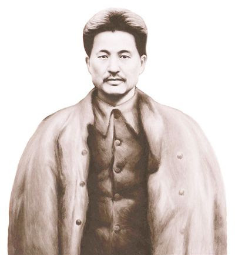

方志敏
方志敏（1899—1935），福建省崇安县（今崇仁县）人，中国共产党早期革命家，杰出的马克思主义者和军事领导人。他长期领导江西、福建等地的革命斗争，是红色革命的重要代表。
在艰苦的革命环境中，方志敏坚持真理，勇于牺牲，为革命事业奔走不息。他曾任红四方面军的重要领导职务，积极推动土地革命和群众运动，展现了无比坚定的革命信念。
方志敏的家风崇尚清廉、刚毅、爱国。他教育子女和同志要秉持正义，坚持真理，勤俭节约，把个人命运与国家民族紧密联系。他以身作则，形成了深厚的红色家风，影响了周围人。
方志敏的革命事迹和家风教育，成为福建乃至全国红色教育的重要资源。他的精神和理念激励着后人继续为理想信念和民族复兴而努力。
← 返回中国地图